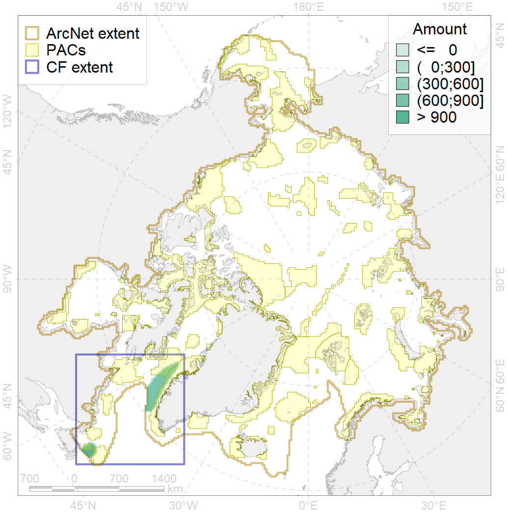
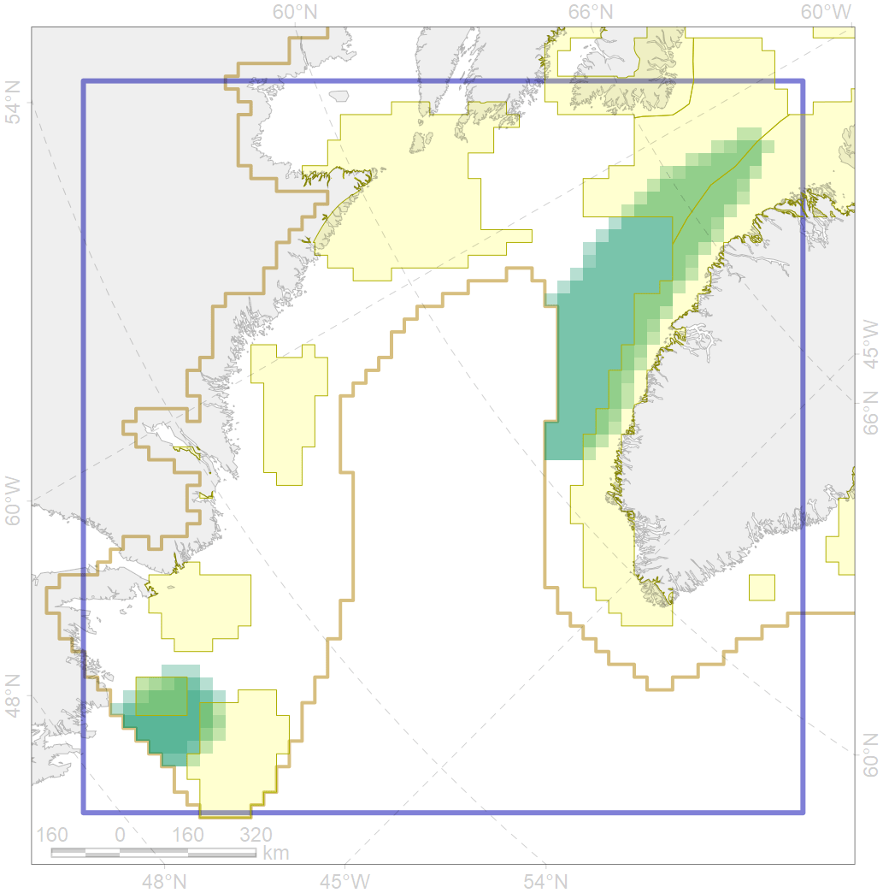

5038

| CF code | 5038 |
| CF name | Blue whale summer feeding areas in the Northwest Atlantic |
| Time Period | not specified |
| Source(s) | Sears and Calambokidis 2002 |
| Seasonality | June-September |
| Depth Horizon | 0-300 |
| Methodology | Various |
| Use Restrictions | |
| Author Name | Filatova |
| Notes | |
| Scenario’s Target | 0.252 |
| Target Achievement | 0.397 (Scenario: 157.6%) |
| PAC | Share of the Total Amount within the PAC | Share of the Target Achievement for the ArcNet | PAC’s Contribution to the Target Achievement |
|---|---|---|---|
| 44 | 20.6%24.9% | 76.3%92.2% | 48.4%58.5% |
| 45 | 11.7%15.2% | 45.3%57.8% | 28.7%36.7% |
| 80 | 5.3%6.9% | 17.6%19.6% | 11.2%12.5% |
| 81 | 2.3%2.7% | 4.6%5.2% | 2.9%3.3% |
| inner | 39.9%49.7% | 143.9%174.9% | 91.3%111.0% |
| outer | 60.1%61.1% | 13.7%15.5% | 8.7%9.8% |
| † supplement values are for area consistence whereas principal values are for Accenter compatible gridded stats |